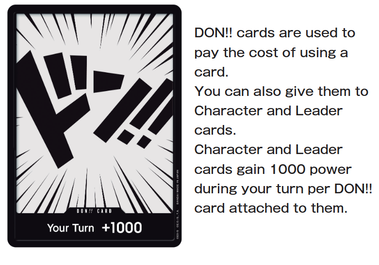

What is the deck made out of
Leader cards:1 cards
Deck: A deck with a total of 50 cards, made up of Character
cards, Event cards, and Stage cards.
Your deck can only contain cards of a color included on the Leader card. Cards of a color not included on the Leader card cannot be added to your deck. your deck can contain no more than 4 cards with the same card number.
DON!! Deck: A deck made up of 10 DON!! cards.

Game Flow
Refresh Phase
Set all of your rested cards as active, and return all DON!! cards attached to cards to your cost area in an active state.
Draw Phase
Draw 1 card from your deck and add it to your hand. (The player going first does not draw a card on their first turn.)
DON!! Phase
Place 2 DON!! cards from your DON!! deck in your cost area and set them as active. If you only have 1 card in your DON!! deck, then place 1 DON!! card in your cost area and set it as active. The player going first can only place 1 DON!! card in their cost area and set it as active on their first turn.
Main Phase
This is the primary phase of the game. You may perform actions A to D in any order and as many times as you wish when possible.
A: Play Cards
● Play Character Cards
● Play Stage Cards
● Activate Event Cards
B: Activate Card Effects
C: Give DON!! Cards
D: Battle
* The game proceeds to End Phase when you declare the end of your Main Phase.
End Phase
“End of Your Turn” and similar effects activate and are resolved. Then, your turn ends and it becomes your opponent’ s turn.
Victory Conditions
You will win if either of the following occurs during the game:
You win a battle against your opponent’s Leader when they have 0 Life cards remaining.
The number of cards in your opponent’s deck reaches 0.
* If a deck is reduced to 0 cards, all ongoing effects will be canceled, and the player whose deck is reduced to 0 cards will lose the game.